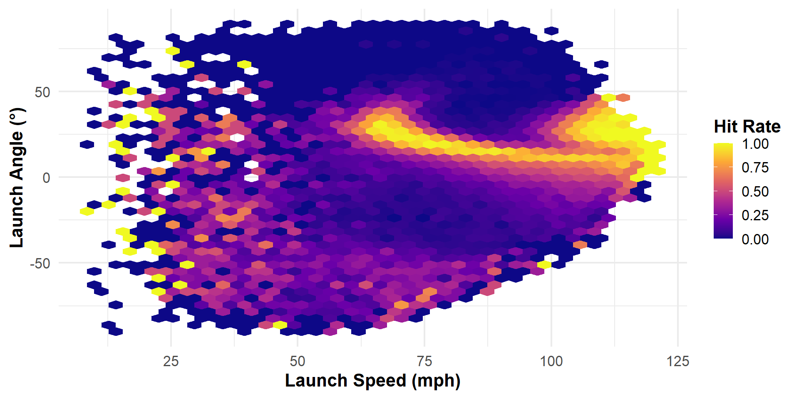
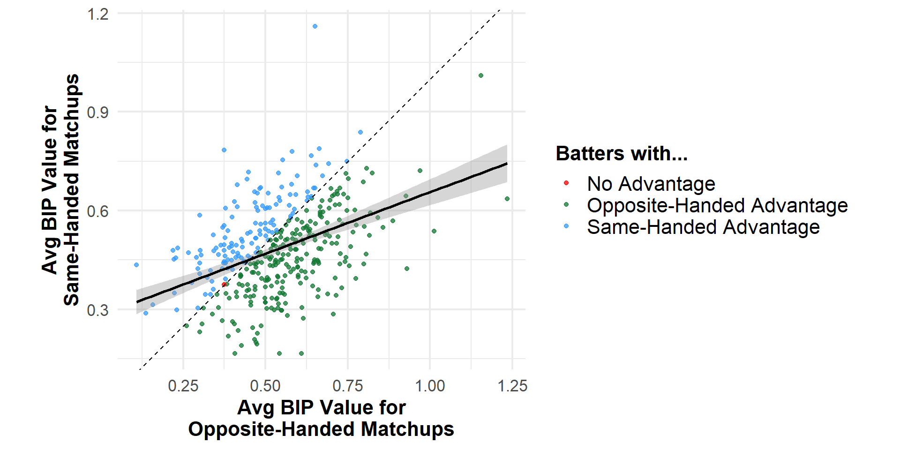
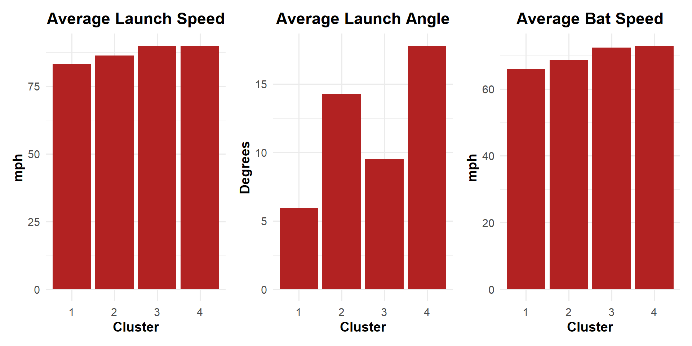

| Cluster | Name | Avg Launch Speed | Avg Launch Angle | Avg Bat Speed | BIP Value | Distance from Cluster Avgs |
|---|---|---|---|---|---|---|
| 1 | Jankowski, Travis | 84.0 | 5.31 | 65.3 | 0.280 | 1.330 |
| 1 | Sánchez, Angel | 81.9 | 5.04 | 66.2 | 0.239 | 1.350 |
| 1 | Bruján, Vidal | 83.7 | 6.79 | 65.2 | 0.411 | 1.420 |
| 2 | Palacios, Richie | 86.1 | 14.50 | 68.5 | 0.417 | 0.309 |
| 2 | Gomes, Yan | 85.8 | 14.10 | 68.8 | 0.423 | 0.560 |
| 2 | Martini, Nick | 86.8 | 14.30 | 69.0 | 0.422 | 0.564 |
| 3 | Canzone, Dominic | 90.0 | 9.69 | 72.0 | 0.541 | 0.506 |
| 3 | Diaz, Yainer | 90.1 | 8.95 | 72.5 | 0.517 | 0.677 |
| 3 | Realmuto, J.T. | 89.0 | 9.24 | 72.6 | 0.578 | 0.742 |
| 4 | Grichuk, Randal | 90.6 | 17.40 | 73.3 | 0.638 | 0.983 |
| 4 | Langford, Wyatt | 89.5 | 17.00 | 73.7 | 0.539 | 1.220 |
| 4 | Rice, Ben | 90.0 | 17.70 | 71.7 | 0.486 | 1.280 |
Beyond the Box Score: Exploring Contact Quality in 2024 MLB
Emily Shteynberg and Cale Latimer
Evaluating Batter Performance Requires More Than Just Outcomes
Traditional stats miss how contact is made
Batted ball metrics connect mechanics to outcomes on a per-play level
Contact quality drives decisions in scouting, player development, and game strategy
Our Data: Batted Ball Tracking
- Each row is a batted ball from 2024 MLB regular season (April 3, 2024 onward)1
- How and where was the ball thrown? How and where was the ball hit? What was the outcome?
- Core variables:
- Pitch mechanics: pitch type, release speed, handedness
- Batter mechanics: launch speed, launch angle, bat speed, swing length, handedness
- Game context: count, outs, inning, defensive shift
- Result: play outcome, fielding position, ball location
Question #1: Is there a “sweet spot” — a combination of launch speed and angle — that maximizes hit rate?
Formula
\[ \text{Hit Rate} = \frac{\text{Hits}}{\text{Batted Balls}} = \frac{\text{Singles} + \text{Doubles} + \text{Triples} + \text{Home Runs}}{\text{Batted Balls}} \]
There is no single sweet spot; the launch angle that maximizes hit rate changes with launch speed
Question #2: Do batters perform better when facing opposite-handed pitchers?
- Only included batters with at least 20 batted balls against each of same- and opposite-handed pitchers
Formula
\[ \begin{aligned} \text{Ball-in-Play (BIP) Value} &= \frac{\text{Total Bases}}{\text{Batted Balls}} \\[1em] &= \frac{\text{Singles} + 2\times\text{Doubles} + 3\times\text{Triples} + 4\times\text{Home Runs}}{\text{Batted Balls}} \end{aligned} \]
Opposite-handed matchups tend to yield higher BIP value — but exceptions are common
Clustering Batters Based on Launch Speed, Launch Angle, Bat Speed Reveals 4 Archetypes

Contact Metrics Vary by Cluster
Higher-Quality Contact Yields More Valuable Batted Balls

Final Remarks: Contact Quality and Context Help Determine Batted Ball Value
- No single fixed “sweet spot” — optimal launch angle varies with launch speed
- Opposite-handed matchups often offer an edge — but not for every batter
- Clustering reveals 4 batter archetypes; stronger contact profiles yield higher batted ball value
- Future work: explore defensive shifts, batter and pitcher skill, team-level clustering, changes in performance over the season, strikeouts and walks
Appendix
Top 5 Batters by Event Type

Hit Rate for Each Event by Launch Speed & Angle

Hit Rate for Each Batted Ball Type by Launch Speed & Angle

Elbow Plot

Hit Rate by Event for each Cluster

Hit Rate by Batted Ball Type for each cluster